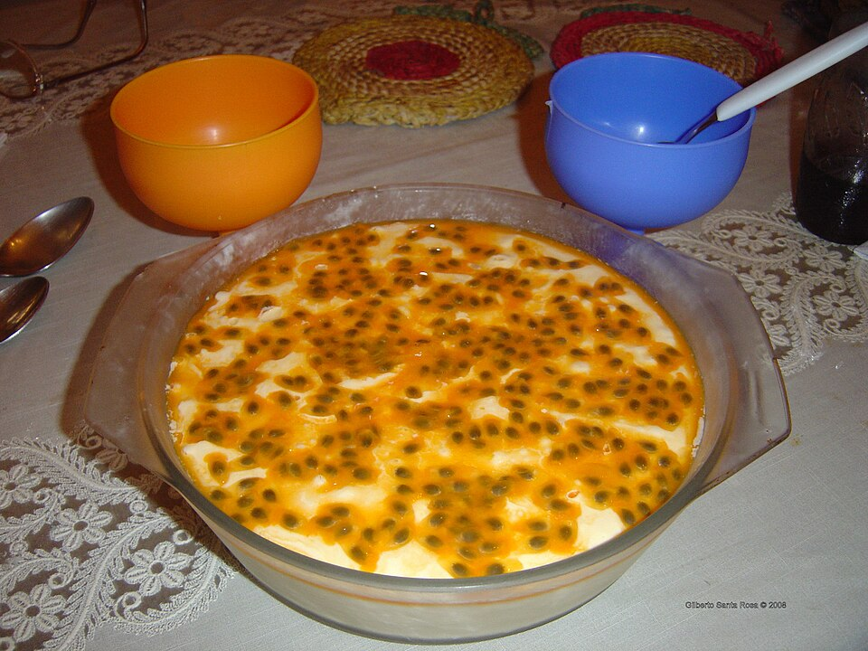

Doces · Musses
Musse de maracujá

Ingredientes
- Polpa de 4 maracujás
- ½ xícara (chá) + 4 colheres (sopa) de água
- ½ xícara (chá) + 2 colheres (sopa) de açúcar
- 1 envelope de gelatina sem sabor
- 1 xícara (chá) de ricota amassada
- 1 caixa de creme de leite (200 g)
- 2 claras
Modo de preparo
- Ferva a polpa com ½ xícara de água e ½ xícara de açúcar por 10 minutos; esfrie.
- Hidrate a gelatina nas 4 colheres de água e dissolva em banho-maria. Bata com a ricota e o creme de leite.
- Bata as claras em neve com o restante do açúcar. Misture metade da calda ao creme e às claras; despeje em taças, gele 4 horas e sirva com o restante da calda.